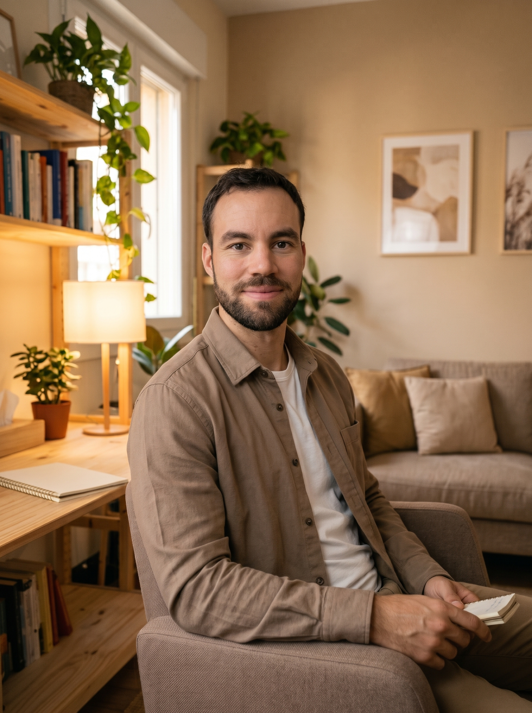
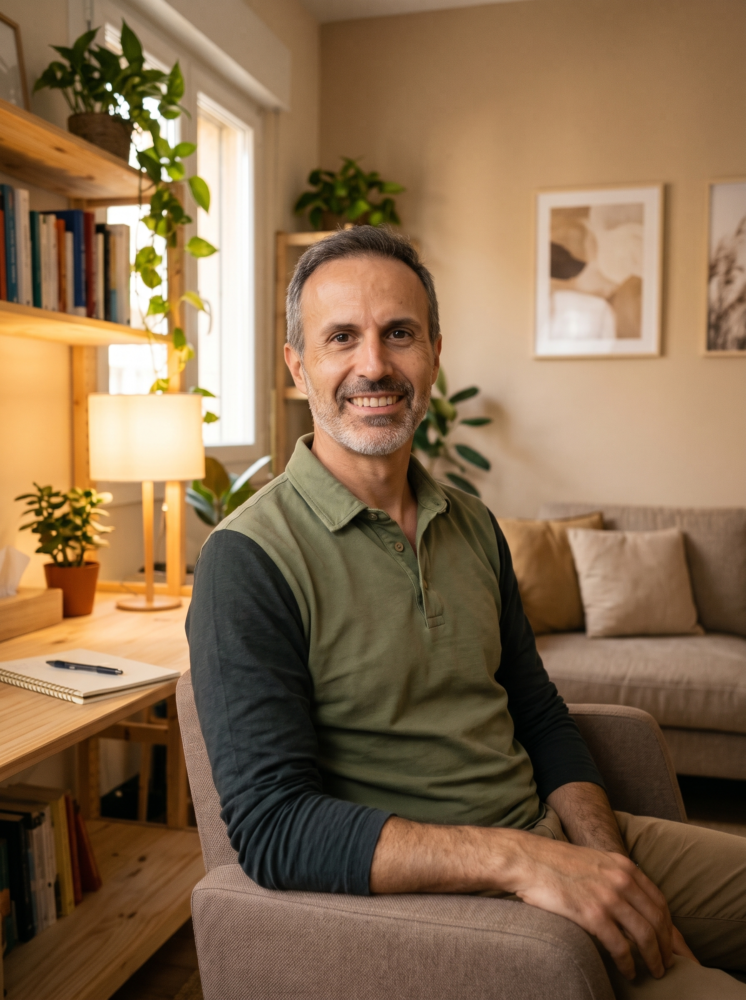
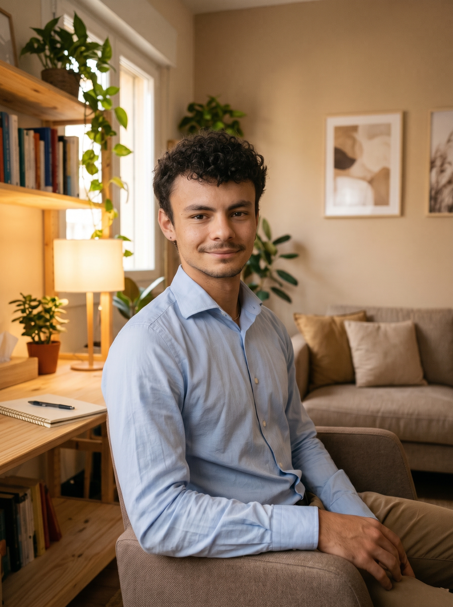

Centre clínic especialitzat en avaluació neuropsicològica, estimulació cognitiva i suport integral a famílies a El Prat de Llobregat.
Preservar i potenciar les capacitats neurocognitives i funcionals de les persones mitjançant intervencions personalitzades, contribuint a mantenir la seva autonomia, benestar i qualitat de vida, i oferint suport i orientació a les seves famílies i entorn proper. Apostem per l'empatia i l'acompanyament familiar, el rigor científic i la professionalitat. Donem importància a l'autonomia dels usuaris, la innovació i la col·laboració comunitària.
Acompanyem de manera propera als familiars i cuidadors, oferint orientació contínua i un tracte càlid i humà.
Exercim des de la professionalitat clínica i l'evidència neuropsicològica per avaluar i intervenir amb precisió.
Situem la independència funcional i la dignitat de cada usuari al centre de totes les nostres decisions terapèutiques.
Unim les darreres eines tecnològiques amb una estreta col·laboració comunitària a El Prat de Llobregat.
Programes clínics adaptats a les necessitats de cada persona i el seu entorn familiar. Contacta'ns per consultar disponibilitat i rebre orientació personalitzada.
Procés complet que comprèn entrevista clínica inicial (anamnesi), passació de proves estandarditzades, correcció especialitzada i lliurament d'informe clínic detallat.
Sessions individuals de 60 minuts dissenyades a mida per treballar memòria, atenció, llenguatge i funcions executives segons el ritme i objectius de cada usuari.
Sessions setmanals de 90 minuts en grups reduïts i homogenis que potencien el rendiment cognitiu, el vincle social i el benestar emocional.
Sessions de 60 minuts orientades a l'assessorament a cuidadors i familiars, oferint pautes pràctiques de convivència, comunicació i acompanyament a la llar.
Subscripció mensual d'entrenament cognitiu des de casa que inclou accés a la plataforma NeuronUP, programació personalitzada d'exercicis i monitoratge remot.
Professionals de la psicologia sanitària i la neuropsicologia units per una visió clínica rigorosa, multidisciplinària i centrada en la persona.
Psicòloga General Sanitària · Clínica, Esport i Emergències
Graduada en Psicologia (UB), amb màster en Intervenció Psicològica Avançada en Emergències i Catàstrofes i màster en Ciències Aplicades a l'Esport (University of Derby). Amb experiència en recerca cognitiva a BRAINLAB (UB–Hospital Sant Joan de Déu) i a Team Derby, aporta una mirada integral enfocada en el benestar emocional, la motivació i l'atenció en crisi.
Psicòloga General Sanitària · Teràpia Sistèmica i Famílies
Graduada en Psicologia (URV) i Màster en Psicologia General Sanitària (UB), amb formació complementària en Integració Social i Atenció a Persones en Situació de Dependència. Compta amb set anys d'experiència en l'acompanyament a persones amb afectacions neurològiques i demències, així com a cuidadors. A Cinquè Hemisferi coordina la psicoeducació i el suport familiar aportant una mirada sistèmica i social.

Psicologia i Neuropsicologia · Avaluació, Demències i Rehabilitació
Graduat en Psicologia amb orientació clínica i neuropsicològica, especialitzat en avaluació cognitiva, malalties neurodegeneratives i rehabilitació. Compta amb experiència formativa a la Unitat de Memòria i Demències de l'Hospital Universitari de Bellvitge, trajectòria en resposta a emergències al SEM i col·labora amb la Societat Catalana de Neuropsicologia.

Neuropsicologia, Emprenedoria i Cura Integral
Psicòleg General Sanitari, Màster en Neuropsicologia i Executive MBA, amb formació clínica a l'Hospital Universitari de Bellvitge. Impulsor del projecte d'allotjaments XOT per a pacients i familiars, uneix salut cognitiva, hàbits de vida i gestió sostenible, inspirant-se en més de 25 anys de pràctica en ioga, dansa Butō i muntanya per preservar l'autonomia i el moviment.

Neuropsicòleg · Avaluació Digital i Precision Psychiatry
Psicòleg per la Universidad Complutense de Madrid (UCM) i Màster General Sanitari per la Universitat de Barcelona (UB). Compta amb experiència en recerca amb models d'Inferència Activa i tecnologies de recopilació intensiva de dades longitudinals i ecològiques (EMA), aplicant les darreres eines digitals per dissenyar plans d'intervenció altament individualitzats.
Psicòloga General Sanitària · Especialitzada en Neuropsicologia
Psicòloga General Sanitària per la Universitat de Barcelona i Màster en Neuropsicologia Clínica, amb formació especialitzada en avaluació, estimulació i rehabilitació neurocognitiva. La seva experiència en l'àmbit sociosanitari i en l'atenció a la diversitat funcional aporta una visió integral orientada a potenciar l'autonomia, el benestar emocional i la qualitat de vida.
Xerrada-taller trimestral participativa i oberta a la ciutadania sobre detecció precoç, reserva cognitiva, neuroplasticitat i pautes pràctiques d'acompanyament familiar.
Espai proposat
Biblioteca Antonio Martín (Cèntric Espai Cultural) o CC Palmira Domènech.
Dia i Horari
Dijous de 18:30 h a 19:30 h (facilitant la conciliació familiar).
Durada i Estructura
60 minuts (40 min teoricopràctics + 20 min de consultes obertes).
Públic objectiu
Persones a partir de 60-65 anys, familiars, fills/es i cuidadors.
Ponent
Equip clínic de Cinquè Hemisferi (conduït per Eric Abad).
Modalitat
Accés lliure i 100% gratuït fins a completar l'aforament de la sala.
Posa't en contacte amb el nostre equip per sol·licitar una primera valoració orientativa, resoldre dubtes sobre els nostres programes o demanar cita prèvia.
Carrer de Lleida, 67
08820 El Prat de Llobregat, Barcelona
+34 937 12 34 56
Dilluns a Divendres de 9:00 h a 20:00 h
info@cinquehemisferi.cat
Atenció confidencial i personalitzada
Completa el formulari i et contactarem al més aviat possible.